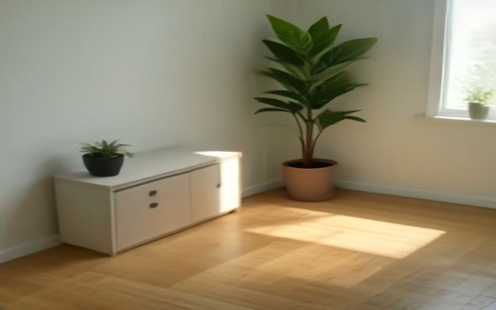
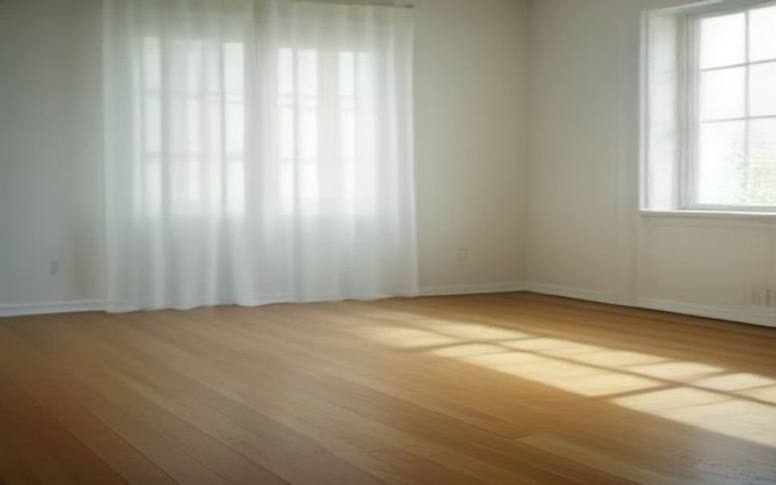

鈴を鳴らす。とことこ歩く。ぴたっと止まる。ピアノ＆リトミック マリーゴールド音楽教室は、0歳から年長さんまでの、はじめての音楽の場所です。上手にできなくても大丈夫。その日の「たのしかった」を、いちばん大切にしています。


※ 写真はイメージです。ピアノ＆リトミック マリーゴールド音楽教室 様の実際のお写真ではありません。ご依頼をいただいた際に、教室のお写真へ差し替えます。
はじめて楽器にさわる日から、ずっと安心して通っていただけるように。
じっと座っていられなくて当たり前の年齢です。走り回っても、途中で泣いても、そのまま受けとめます。お母さんが謝る必要はありません。
鈴、タンバリン、カスタネット、ボール。小さな手でも持てるものをそろえています。ご家庭で買っていただくものはありません。
春はちょうちょ、夏は水あそびの歌。おうちでも歌えるように、その月の歌をおたよりでお渡ししています。
月齢や年齢で、クラスをわけています。同じくらいのお子さまと一緒に過ごせます。
リトミックでついた「音を聴く力」は、そのままピアノに続きます。ピアノ＆リトミック マリーゴールド音楽教室では、ピアノのレッスンもしています。
音を聴く耳ができているお子さまは、鍵盤に入るのがはやいです。年長さんから、そのまま続けていただけます。
さいしょから読ませることはしません。耳で覚えた曲を、あとから譜面と結びつけていきます。
まずは教室の楽器ではじめられます。続けられそうだと思われてから、ご用意いただければ大丈夫です。
45分間の流れです。はじめての日も、この順番で進みます。
まずは名前を呼んで、お返事から。泣いていても、抱っこのままで大丈夫です。
音に合わせて歩く、走る、止まる。ピアノの音が変わったら、動きも変わります。
鈴やタンバリンを鳴らします。音の大きい・小さいを、耳と手で覚えていきます。
最後はゆっくり座って、今日の歌をもう一度。おうちで歌える曲を持って帰ります。
ご不安なところは、遠慮なく聞いてください。
だいじょうぶです。この年齢のお子さまは、じっと座っていられなくて当たり前です。走り回っても、部屋のすみで見ているだけでも、それがその日のその子のペースです。お母さんが謝られる必要はまったくありません。
できます。毎月の歌や活動は月ごとに変わりますので、いつ入られても「途中から」にはなりません。はじめての方には、最初の数回はそばでご説明しながら進めます。
どうぞご一緒にお越しください。抱っこひものままご参加いただけます。授乳やおむつ替えの場所も、お声がけいただければご案内します。
もちろん大丈夫です。お子さまがその日の気分で参加されなくても構いません。教室の雰囲気を見ていただくだけでも、遠慮なくお越しください。
※ここには先生のご紹介文が入ります。ご経歴、リトミックを始められたきっかけ、お子さまと接するときに大切にされていること——このあたりを3〜5行いただければ、こちらで整えます。写真をお持ちでしたら、この丸い場所に入ります。
※金額は仮のものです。実際の料金に差し替えます。
1回かぎり。ご入会前にお試しいただけます。
いちばん多くの方が選ばれているコースです。
2人目からお月謝が割引になります。
| 教室名 | ピアノ＆リトミック マリーゴールド音楽教室 |
|---|---|
| ばしょ | （会場名・住所が入ります） |
| ひにち | （曜日と時間が入ります） |
| たいしょう | 0歳〜年長（未就学児） |
| もちもの | 動きやすい服装と、水分だけお持ちください |
見学だけでも大丈夫です。お子さまの機嫌が悪い日は、日をあらためても構いません。
体験レッスンを申し込む →※このボタンは見本です。実際のページでは、そのままお申し込みいただけます。